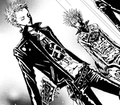
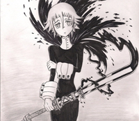
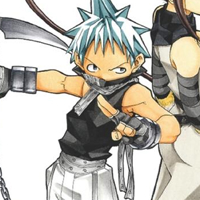
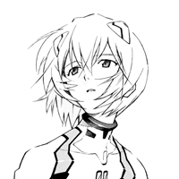
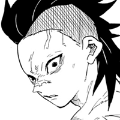

Testando imagens
↑↑↑Olha o Ícone do site
Abaixo você vai ver meus personagens favoritos dos meus mangás favoritos:
Nobu, Nana

Crona e Black⛤Star, Soul Eater
 
Aqui tem meus personagens favoritos de outros mangás:
Rei, Evangelion

Genya, Demon Slayer

Hiei, Yuu★Yu★Hakusho

Trunks, Dragon Ball